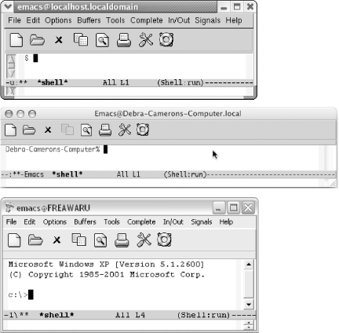

|
|
< Day Day Up > |
|
5.1. Executing Commands in Shell BuffersOne of the most important features of Emacs is its ability to run a command shell in a buffer. Once you have started a shell buffer, you can do all of your normal command-line work within Emacs. What does this buy you?
As you get used to working within Emacs, you will undoubtedly discover more and more ways to put shell mode to use. In this section, we discuss shell mode. Later in this chapter, we discuss directory editing, printing, and calendar and diary features for doing simple time management in Emacs. Right now, we'll start with a simple variation on shell mode, a feature that lets you execute commands one at a time. 5.1.1 Running One Command at a TimeTo run a command while you're in an Emacs session, type M-!. Emacs asks for the command you want to run. Type the command and press Enter. Emacs then opens a window called *Shell Command Output* where it displays the results of your command.
Because the output from the diff command is in a buffer, you can edit it, save it, or do anything else you would like with it. Of course, if the operating system has no diff command or cannot access it for some reason, this command fails. An interesting twist to the shell command facility is that you can use a region of a buffer rather than a traditional file as input to the command. For example, let's say we want to sort a phone list. First, we put the cursor somewhere in the list (say, on the first character of Liam), then we give the mark-paragraph command (M-h). This command defines the phone list as a region, with the cursor at the beginning of the paragraph and the mark at the end. In the following example, the shaded area shows the extent of the region we want to sort. After selecting a region, we press M-| (for shell-command-on-region); Emacs prompts for the shell command to run.
Now we give the command sort without specifying any input file. Emacs is taking care of the input for us.
Emacs has sorted the phone list (i.e., everything within the region). A useful variation for M-! puts the output directly into the current buffer, rather than into a *Shell Command Output* buffer. To do so, precede the command with C-u: for example, C-u M-! runs a shell command and puts the output in the current buffer.
5.1.2 Using Shell ModeNow we're ready to discuss shell mode, the interactive facility for running commands. To start a shell buffer, type M-x shell Enter. This creates a buffer named *shell*. You see the prompt for your shell within this buffer. (This defaults to your usual shell; you can substitute another shell to use in Emacs. See "Which shell?" later in this chapter.) Figure 5-1. Shell buffers for Linux, Mac OS X, and WindowsFor the most part, shell mode is exactly like the normal command interface, except that you can use Emacs to edit the commands as you type them. You can copy commands from one place to another, copy the results into a file, save the whole shell buffer to a file, and so on. Note in Figure 5-1 that Emacs has added a few items to the menu bar (Complete, In/Out, and Signals). A few tricks are worth knowing, though. For example, you normally interrupt a command by typing C-c. If you type C-c in shell mode, Emacs thinks that the C-c is part of a command meant for it, because many Emacs commands start with C-c. Therefore, you have to type C-c C-c to terminate the current job. Likewise, under Unix, you type C-c C-z to stop a job, instead of C-z, and C-c C-d instead of C-d, and so on. (C-c C-d is not strictly necessary because Emacs understands C-d in context. If you're at the end of the buffer, C-d means "end of file"; if you're anywhere else, it deletes a character.) Alternatively, you can select options from the Signals menu rather than using control characters, if desired (for example, selecting EOF instead of typing C-d). Shell mode also provides a few convenient shortcuts. The command M-p retrieves the last shell command you typed, no matter how far back in the buffer it is. Typing successive M-p's brings back earlier commands.
In this example, the previous command was more dickensxmas.tex. It's no longer on the screen; its output has pushed it off the top. M-p (for comint-previous-input) retrieves the command, but doesn't execute it; you can edit the command before pressing Enter. To find subsequent commands, type M-n. If these commands sound familiar to you, they should. They are history commands, which are identical to the minibuffer history commands we discussed in Chapter 3. The In/Out menu is devoted to working with command history. Enter and Tab have special functions in shell mode. Pressing Enter executes the command on the line where the cursor is, even if you move the cursor up to the line of an earlier command you want to execute again. When you press Enter, Emacs copies the command to the end of the buffer and executes it. Of course, you can modify the command before pressing Enter. Pressing Tab puts the Emacs completion feature into action; use completion for operating system commands, filenames, and variables. Note that the completion of system commands works best on Unix implementations like Linux and Mac OS X; Emacs doesn't seem to find all the possible Windows commands, for example. If you type a command that produces a lot of output, cluttering up your session, there's an easy way to get rid of it. Type C-c C-o (for comint-kill-output).
The previous command (ls-la) remains on the screen, but its output, a long list of files, is deleted. C-c C-o can delete output from only the most recent command; it can't delete output from your previous commands. Another useful command for shell mode is C-c C-r (for comint-show-output). This command is useful if a command produces a lot of output and causes the first few lines of output to scroll off the screen. C-c C-r repositions the window so the first line of output from your last command is at the top of the window. If you want to see the end of the output instead, type C-c C-e (for comint-show-maximum-output); this command moves the last line of the input to the bottom of the window. When you're writing a book, moving by paragraphs makes sense, but when you're using a shell, moving by output group is more helpful. An output group consists of a command and its output. To move to the previous output group, type C-c C-p. To move to the next output group, type C-c C-n. An advantage of shell mode is that you can start a command and then edit another buffer while the command runs. The shell buffer doesn't need to be onscreen; just type M-x shell to get the buffer back again. You can have multiple shell buffers running at once; just use the command M-x rename-uniquely to rename your shell buffer. You can start another shell buffer, and another, and another—as many as you need to juggle all your tasks. 5.1.2.1 Which shell?Normally, Emacs uses your default shell in shell mode. Under Windows that's cmd.exe (the familiar C:\> prompt or a close relative).[1] But Unix has a wide variety of available shells, including the GNU Project's bash and the zed shell, zsh. Whatever shell you normally use, that's what Emacs starts when you enter shell mode.
How does Emacs know which shell to start? First, it looks at the variable shell-file-name. Then it looks for a Unix environment variable named ESHELL. Finally it looks for an environment variable named SHELL. If you want to run another particular shell (for example, the zed shell) when you're in Emacs, you can add the following command to your .emacs file: (setq shell-file-name "/bin/zsh") When Emacs starts an interactive shell, it runs an additional initialization file after your shell's normal startup files. The name of this file is .emacs_shell-name, where shell-name is the name of the shell you want to use in Emacs. It must be located in your home directory. For example, if you use the C shell, you can add Emacs-only startup commands by placing them in the file .emacs_csh. Let's say that when you're in Emacs, you want to change the prompt to emacs:% and you want an environment variable called WITHIN_EDITOR to be set to T. Here's the contents of your .emacs_csh file: set prompt="emacs:% " setenv WITHIN_EDITOR T Within a shell buffer, Emacs also sets the environment variable EMACS to t, and sets your terminal type (the TERM variable) to emacs. 5.1.2.2 Making passwords invisible in shell modeBy default, shell mode displays everything you type and that includes passwords—not a good situation if someone is peering over your shoulder. There is a way around this problem, however. Before you type the password, type M-x send-invisible. Emacs asks for the nonechoed text. When you type a character, Emacs puts an asterisk in the minibuffer. Press Enter and Emacs enters the password without displaying it. To have Emacs hide passwords as you type them, add the following two lines to your .emacs file: (add-hook 'comint-output-filter-functions 'comint-watch-for-password-prompt) Emacs asks for nonechoed text in the minibuffer whenever a password prompt appears on the screen, making sure that the password is never displayed. Table 5-1 summarizes shell mode commands.
|
|
|
< Day Day Up > |
|